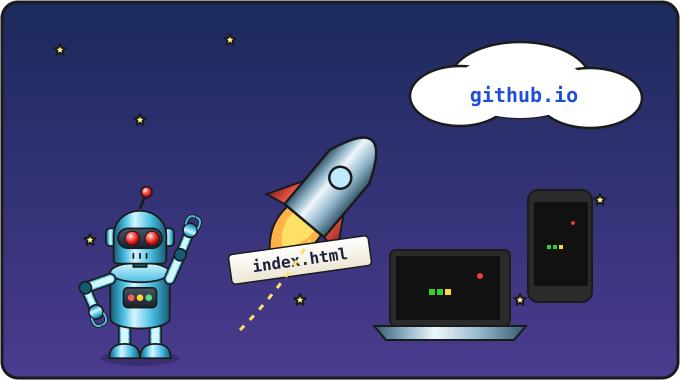

Урок 16 из 16 ⏱ 45–60 минут
Игра в интернете
До сих пор игра жила только в папке kod на твоём компьютере. Сегодня мы выложим её в интернет, и в неё сможет сыграть кто угодно по ссылке: друзья, бабушка, одноклассники. Поможет нам бесплатный сервис GitHub Pages.
- подготовишь файл
index.htmlдля публикации; - вместе со взрослым создашь хранилище на сайте GitHub;
- загрузишь туда игру и включишь GitHub Pages;
- получишь ссылку на свою игру;
- придумаешь, как улучшить игру дальше.
| 5 мин | Что такое GitHub и GitHub Pages |
| 5 мин | Готовим файл index.html |
| 20 мин | Хранилище, загрузка файла, включаем Pages |
| 5 мин | Играем по ссылке, делимся |
| 10–25 мин | Что дальше: идеи и бонус для телефона |
По правилам GitHub завести свой аккаунт можно только с 13 лет. Поэтому используйте аккаунт взрослого (свой или созданный для этого на ваш email) и проходите урок вместе с ребёнком. Нужен интернет.
Git и терминал не понадобятся: файл загружается через сайт, кнопкой. Сайт GitHub на английском, поэтому ниже рядом с каждой кнопкой дан перевод. Если интерфейс GitHub к этому времени немного изменится, ищите кнопки с теми же названиями.
Опубликованная игра будет видна всем. Проверьте, что в ней нет личных данных: фамилии, адреса, школы.

index.html на GitHub Pages — и игра улетает в интернет: теперь в неё можно играть по ссылке с любого компьютера и телефона.Что такое GitHub
GitHub — это сайт, где программисты со всего мира хранят свои программы. Каждая программа лежит в своём хранилище (по-английски repository, или коротко «репозиторий»). Это как папка в интернете.
GitHub Pages — услуга GitHub, которая превращает такое хранилище в настоящий сайт со своей ссылкой. Наша игра — это HTML-страница, так что она отлично подходит!
Шаг 1. Готовим файл
Сайт, открытый по ссылке, первым делом ищет страницу с именем index.html («главная страница»). Сделаем копию игры с таким именем:
- Открой в Geany
snake.html. - Файл → Сохранить как (Ctrl + Shift + S), папка kod, имя
index.html. Нажми Сохранить. - Теперь в Geany открыт
index.html. Закрой эту вкладку: свою игру ты и дальше будешь менять вsnake.html, аindex.html— только копия для интернета.
Загляни в папку kod: в ней теперь три файла — proba.html, snake.html и index.html.
Шаг 2. Создаём хранилище
- Открой в браузере сайт github.com и войди в аккаунт (Sign in — «войти»). Это делает взрослый.
- В правом верхнем углу нажми + и выбери New repository («новое хранилище»).
- В поле Repository name («имя хранилища») напиши
snake. - Проверь, что выбрано Public («открытое для всех»): GitHub Pages бесплатно работает с открытыми хранилищами.
- Нажми зелёную кнопку Create repository («создать хранилище»).
Шаг 3. Загружаем игру
- На странице нового пустого хранилища найди ссылку uploading an existing file («загрузить существующий файл») и нажми на неё. (Если хранилище не пустое: кнопка Add file → Upload files.)
- Нажми choose your files («выбрать файлы»), открой Документы → kod и выбери
index.html. Можно и просто перетащить файл мышкой из папки в окно браузера. - Внизу страницы нажми зелёную кнопку Commit changes («сохранить изменения»).
Теперь в списке файлов хранилища виден index.html. Твой код лежит в интернете!
Шаг 4. Включаем GitHub Pages
- Вверху страницы хранилища нажми вкладку Settings («настройки», значок шестерёнки).
- В меню слева найди и нажми Pages.
- В разделе Build and deployment («сборка и публикация»), в поле Source («источник»), выбери Deploy from a branch («публиковать из ветки»).
- В поле Branch («ветка») выбери main, рядом оставь папку / (root). Нажми Save («сохранить»).
- Подожди одну-две минуты и обнови страницу (F5). Вверху появится надпись Your site is live at… («Твой сайт работает по адресу…») и кнопка Visit site («открыть сайт»).
Адрес будет таким:
https://ИМЯ-АККАУНТА.github.io/snake/
Нажми Visit site, и вот она, твоя Змейка в интернете! 🎉🐍 Скопируй ссылку из адресной строки и отправь друзьям.
kod. И у каждого игрока на его компьютере тоже свой: localStorage живёт в том браузере, где играют.
Как обновить игру
Если ты что-то улучшишь в игре:
- Поменяй и проверь
snake.htmlкак обычно. - Снова сохрани его как
index.htmlчерез «Сохранить как». Geany спросит, заменить ли файл, — соглашайся. Закрой вкладкуindex.html. - На GitHub, в хранилище
snake: Add file → Upload files, выбери новыйindex.htmlи нажми Commit changes. Старый файл заменится новым. - Подожди минуту-две и обнови страницу игры.
- Страница 404 (не найдено)? Подожди ещё пару минут, GitHub Pages включается не мгновенно. Проверь, что файл называется именно
index.html, маленькими буквами. - Вместо игры — список файлов или текст кода? Проверь, что в настройках Pages выбрана ветка main и папка / (root).
- Игра открылась, но не работает? Открой консоль (F12) — ты уже умеешь читать ошибки!
Бонус: играем на телефоне
Ссылку можно открыть и на телефоне, но там нет клавиатуры со стрелками. Добавим кнопки на экран! Здесь есть хитрость: функции onKey нужно только event.key, поэтому кнопка может вызвать её сама и «притвориться» клавишей.
Добавь в snake.html под подсказкой <p class="help">:
<p>
<button onclick="onKey({ key: 'ArrowUp' })">Вверх</button>
</p>
<p>
<button onclick="onKey({ key: 'ArrowLeft' })">Влево</button>
<button onclick="onKey({ key: ' ' })">Старт</button>
<button onclick="onKey({ key: 'ArrowRight' })">Вправо</button>
</p>
<p>
<button onclick="onKey({ key: 'ArrowDown' })">Вниз</button>
</p>
<button>— кнопка;onclick— что делать при нажатии на кнопку (это тоже событие, какkeydown);{ key: 'ArrowUp' }— мы сами сделали объект, похожий на настоящее событие. Внутри двойных кавычек текст пишем в одинарных кавычках'…', чтобы кавычки не перепутались.
И немного CSS в <style>, чтобы кнопки было удобно нажимать пальцем, а поле помещалось на узком экране:
button {
font-size: 20px;
width: 110px;
height: 56px;
margin: 4px;
}
canvas {
max-width: 90%;
}
Проверь на компьютере, что кнопки работают, потом обнови index.html на GitHub и открой ссылку на телефоне.
Что ты теперь умеешь
Оглянись назад: с нуля ты научился(-ась) создавать файлы, писать код, искать ошибки и выложил(а) свою игру в интернет. А по пути узнал(а) главные понятия программирования, которые есть во всех языках:
| Понятие | Где было в Змейке |
|---|---|
| Переменные | score, speed, dx, dy |
| Функции | drawCell, step, startGame |
Функции, которые отвечают (return) | randomCell, isOnSnake |
| Условия | съела ли яблоко, врезалась ли в стену |
Циклы for и while | рисуем змейку, ищем свободное место для яблока |
| Массивы и объекты | змейка — список клеточек { x, y } |
| События | нажатия клавиш и кнопок |
| Таймер | змейка ползёт сама |
| Хранение данных | рекорд в localStorage |
| Отладка | консоль, чтение ошибок, охота на баг |
Что дальше? Идеи для улучшений
Настоящие программисты никогда не заканчивают игру: всегда хочется добавить что-то ещё. Выбирай, что нравится. Звёздочки показывают сложность.
| Идея | Сложность | Подсказка |
|---|---|---|
| Пауза на клавишу P | ⭐ | переменная paused и return в начале step (урок 13) |
| Глаза у змейки | ⭐ | два маленьких fillRect поверх головы |
| Змейка-радуга | ⭐ | массив цветов и colors[i % colors.length] в цикле рисования |
| Режим «порталы» на клавишу M | ⭐⭐ | переменная-флажок и код порталов из урока 9 |
| Золотое яблоко за 5 очков | ⭐⭐ | свойство apple.gold и Math.random() < 0.2 |
| Камни-препятствия | ⭐⭐ | массив rocks, проверка как в isOnSnake |
| Поле в клеточку | ⭐⭐ | два вложенных цикла и (x + y) % 2 для чередования цвета |
| Уровни: каждые 5 яблок — новый уровень с камнями | ⭐⭐⭐ | переменная level |
| Две змейки для двух игроков (стрелки и WASD) | ⭐⭐⭐ | второй массив, свои dx/dy, event.code |